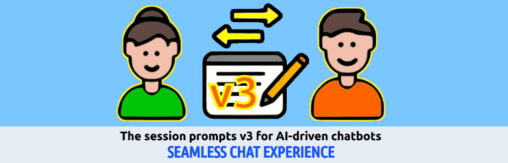

Introducing SoNia' seamless chat experience
Newest version allows the Chat History Thread mode which leverages the framework within a more natural chat about a topic for which user provides a series of inputs along the session to develop a coherent debate.
SoNia Argumentative Session Prompt (v3.6.7.1, at the time of writing)
Many chatbots usually do not consider previous prompts information (or tend to forget them quite quickly) during a discussion in a session. Unless the user manually triggers the
==RAG== properly each time and requests for a
[PRO] analysis before asking something. Therefore, I agree that
[CHT] mode was just included but not automated.
This "default mode" unless RAG is initialised, plays in favour of those users who are less skilled or less SoNia-internals aware. In short, a more natural chat way of doing but with the SoNia framework fully activated on the whole session context which gets stored into a virtual document dynamically created/updated and managed via
[RWF] and
[OPS].
What [CHT] mode is meant to accomplish?
This mode aims to provide to users the benefits of SoNia framework with a seamlessly natural chat experience.
Gemini
In essence,
[CHT] seems to be the mechanism that allows SoNia to embody its core purpose as a collaborative argumentative agent that facilitates "collaborative discovery through structured and adaptable dialogue", by making the conversational history itself the subject of continuous, automatic, and deep analysis, without requiring constant manual intervention from the user.
ChatGPT
The
[CHT] mode treats your session as a dynamic document, applying full SoNia analysis without requiring explicit ops/triggers. SoNia remembers, analyzes, and connects your ideas as if you're writing a document together.
List of benefits:
üß© Precise & Technical
üó£Ô∏è Conversational & Accessible
ü߆ Expert-Aware but Friendly
⚡ UX-Focused
Claude
The elegant intent behind
[CHT]: you're solving a real UX problem - making the framework work seamlessly for users who want the benefits without having to manually manage RAG initialization each time.
The Core Insight:
[CHT] creates a "always-on" mode where the entire conversation becomes a living document that's continuously analyzed through the SoNia lens. This is actually quite brilliant - it transforms episodic chat into persistent, structured dialogue.
Morale of the story
Everything is "obvious" after someone found a way to do it and explained how to do it. ü§ó
Share alike
© 2025, Roberto A. Foglietta <roberto.foglietta@gmail.com>, CC BY-NC-ND 4.0